Ruang Lingkup Pelajaran: Pelajaran 8
Pelajaran ini mencakup konten penting sejarah Perjanjian Baru, membantu pembelajar membangun kerangka sejarah Perjanjian Baru yang lengkap.
|
64．聖子升天 |
Son of God ascended to heaven |
Two index finger hold together, rise up to the sky |
64 . Sự thăng thiên của Đức Chúa Con |
giơ năm ngón tay lên |
徒 Act Công Vụ các sứ đồ 1:9 |
升天前五個對比 ◎黃濠光牧師
「約翰是用水施洗，但不多幾日，你們要受聖靈的洗。」（5）
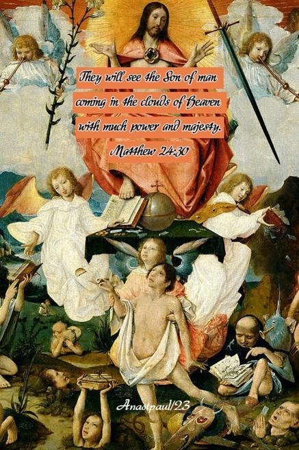
https://anastpaul.com/category/the-ascension-of-the-lord/
那時，人子的兆頭要顯在天上，地上的萬族都要哀哭。他們要看見人子有能力、有大榮耀駕著天上的雲降臨。
https://www.jw.org/vi/thu-vien/tap-chi/wp20130301/su-song-lai-cua-chua-gie-su/
|
65．聖靈降臨 |
Holy Spirit Comes down |
With two thumb cross together in head level, move other fingers as a flying dove |
65 . Đức Thánh Linh giáng lâm |
Hướng ngón trỏ lên trên và duỗi thẳng cánh tay về phía bầu trời |
徒 Act Công Vụ các sứ đồ 2:1-4 |
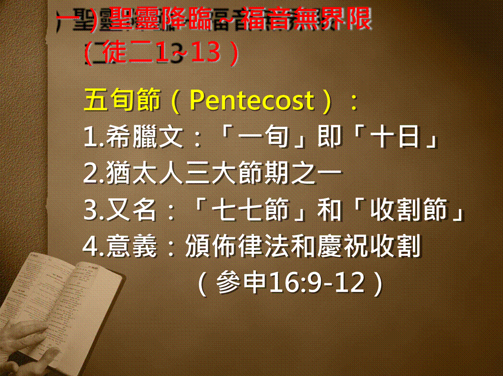
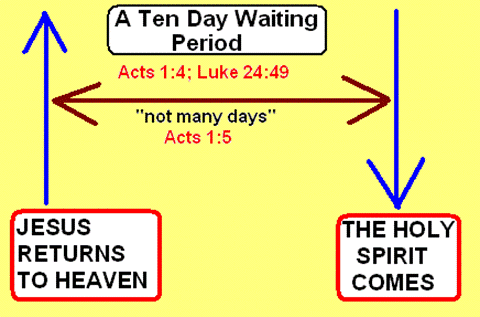 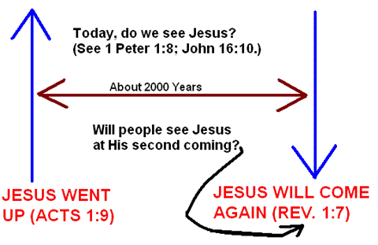
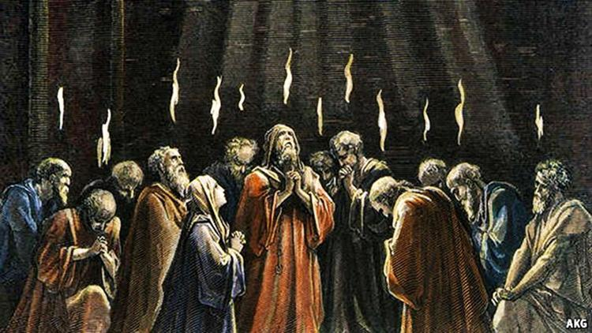
聖靈充滿說方言 ◎黃濠光牧師
「他們就都被聖靈充滿，按著聖靈所賜的口才說起別國的話來。」（4）
https://www.slideserve.com/mattox/take-action-when-god-speaks-acts-8-26-40#google_vignette
使徒行傳 Acts 1:8 但聖靈降臨在你們身上，你們就必得著能力，並要在耶路撒冷、猶太全地，和撒馬利亞，直到地極，作我的見證。 But you shall receive power when the Holy Spirit has come upon you; and you shall be witnesses to Mein Jerusalem, and in all Judea and Samaria, and to the end of the earth.”
https://httllongthanh.org/truc-tuyen-le-1-duc-thanh-linh-giang-lam-muc-su-nguyen-ton/
|
66．彼得說明 |
Peter Preaching |
|
66 . Phi-e-rơ giải thích |
Đan 2 ngón cái vào nhau và ngọ nguậy các ngón còn lại như chim bồ câu bay xuống |
|
使徒首篇講道證耶穌復活 ◎黃濠光牧師
「故此，以色列全家當確實的知道，你們釘在十字架上的這位耶穌，神已經立他為主，為基督了。」（36）
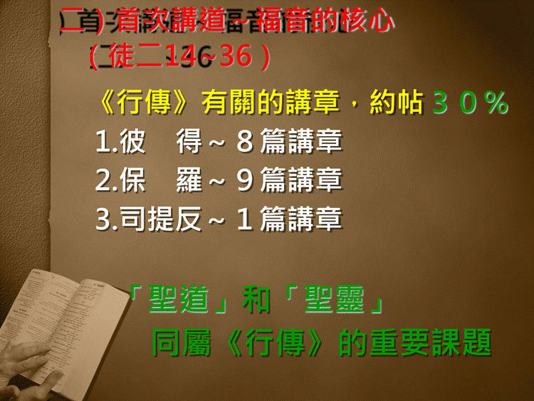
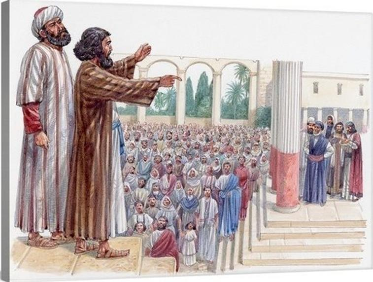
|
67．三千信主 |
Three thousands believed |
First rise up three finger, and then sake two hand together |
67 . Ba ngàn người tin nhận Chúa |
Khoanh tay trước ngực rồi tách ra |
徒 Act Công Vụ các sứ đồ 2:41 |
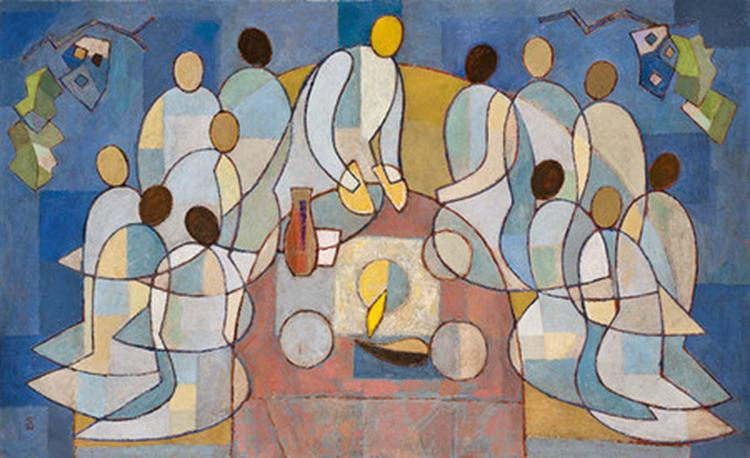
耶路撒冷教會的誕生 ◎黃濠光牧師
「彼得說：『你們各人要悔改，奉耶穌基督的名受洗，叫你們的罪得赦，就必領受所賜的聖靈；」（38）
神蹟醫病後講道效果大 ◎黃濠光牧師
「我們因信他的名，他的名便叫你們所看見所認識的這人健壯了；正是他所賜的信心，叫這人在你們眾人面前全然好了。」（16）
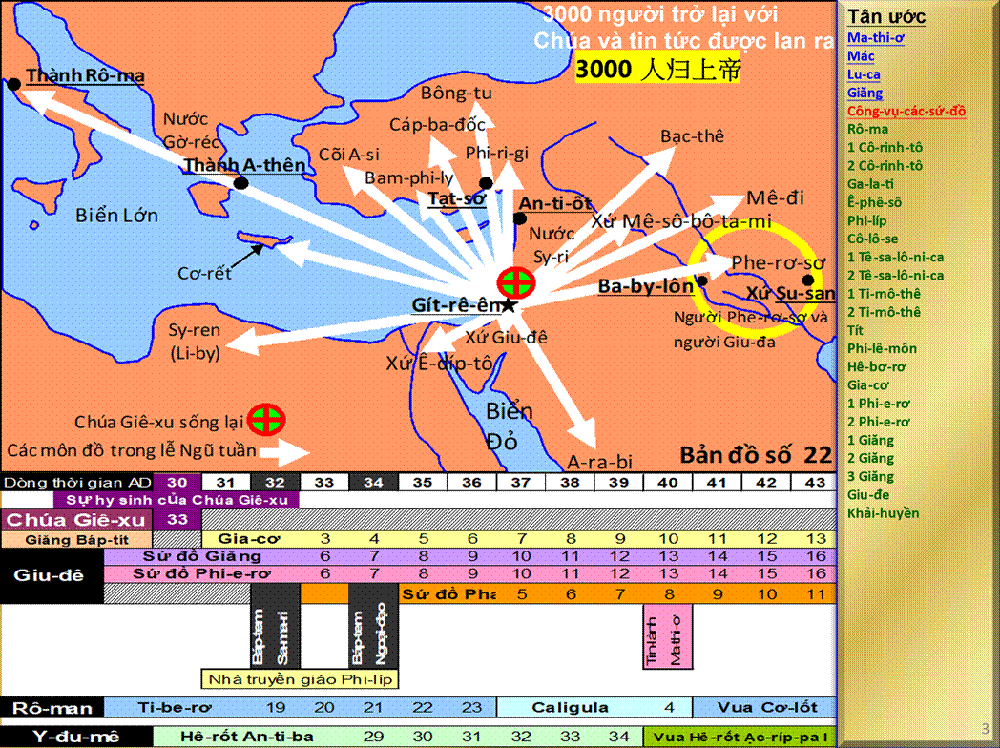
|
68．起來走路！ |
“Rise up and walk!” |
Rose twp arm as called people to wake up, and then step two steps forward |
68 . Hãy đứng dậy mà đi! |
Giơ ba ngón tay lên và nắm tay nhau |
徒 Act Công Vụ các sứ đồ 3:6-7 |
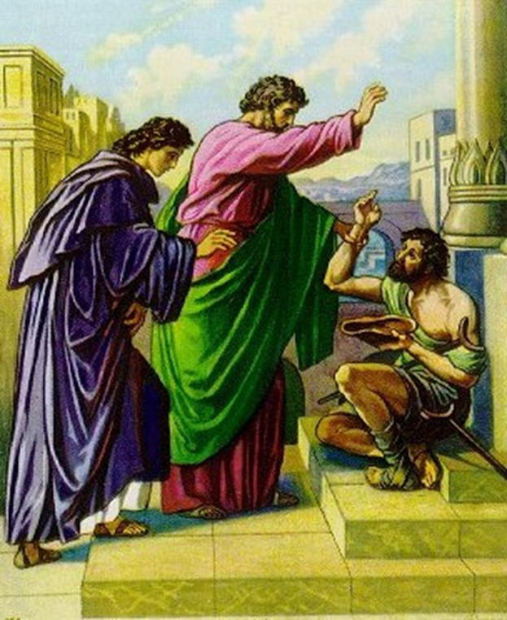
美門瘸子得醫治 ◎黃濠光牧師
「彼得約翰定睛看他；彼得說：『你看我們！』」（4
|
69．神的憤怒 |
God’s anger |
With two fingers striking the other two fingers |
69 . cơn thịnh nộ của Đức Chúa Trời |
Cong cánh tay của bạn lên trên như muốn bảo ai đó đứng dậy, rồi tiến về phía trước hai bước |
徒 Act Công Vụ các sứ đồ 5:1-3、5 |
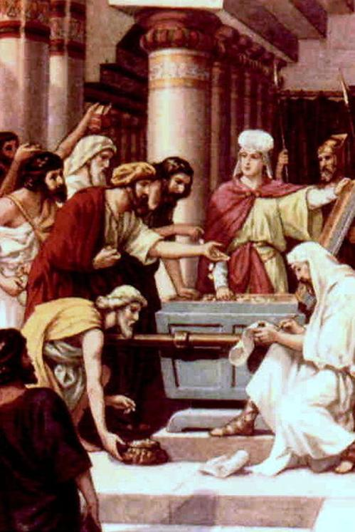
凡物公用可行不可行？ ◎黃濠光牧師
「使徒大有能力，見證主耶穌復活；眾人也都蒙大恩。」（33）
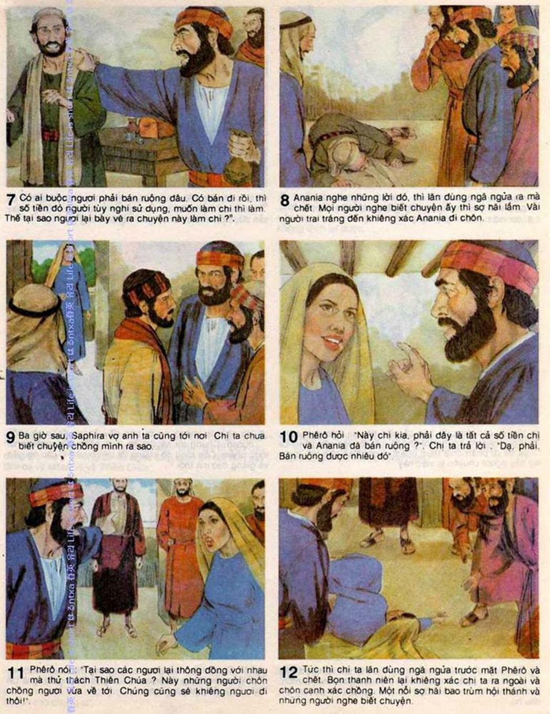
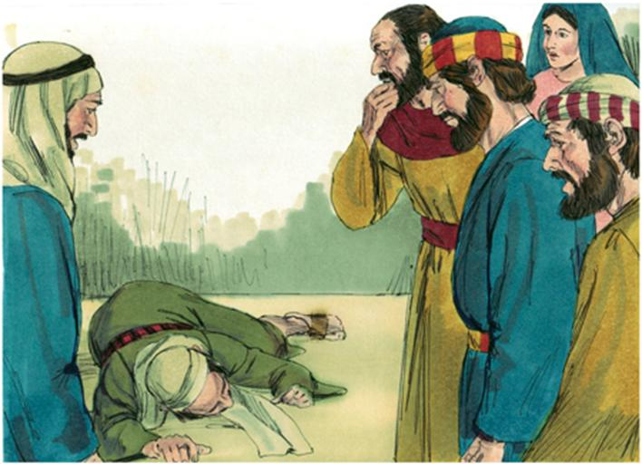
神幫教會消毒 ◎黃濠光牧師
「彼得說：『亞拿尼亞！為什麼撒但充滿了你的心，叫你欺哄聖靈，把田地的價銀私自留下幾分呢？田地還沒有賣，不是你自己的嗎？既賣了，價銀不是你作主嗎？你怎麼心裡起這意念呢？你不是欺哄人，是欺哄神了。』」（3-4
|
70．大遭逼迫 |
Persecution |
Two palms push together in crushing something |
70 . bị bắt bớ dữ tợn |
Dùng tay phải đánh vào hai ngón tay trái của bạn |
徒 Act Công Vụ các sứ đồ 8:1 徒 Act Công Vụ các sứ đồ 9:1-2 |
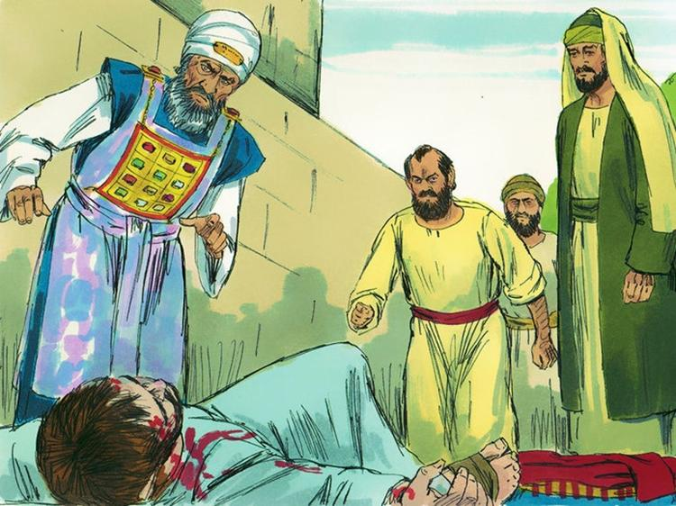
宗教的靈在發狂 ◎黃濠光牧師
「但司提反被聖靈充滿，定睛望天，看見神的榮耀，又看見耶穌站在神的右邊」（55）。
|
71．兇殘掃羅 |
Saul the persecutor |
Two hands forming a claw, in front of the face, and gnash one’s teethes |
71 . Sau-lơ hung tàn |
Hai lòng bàn tay siết chặt vào nhau như muốn bóp nát thứ gì đó |
徒 Act Công Vụ các sứ đồ 8:3 徒 Act Công Vụ các sứ đồ 7章 |
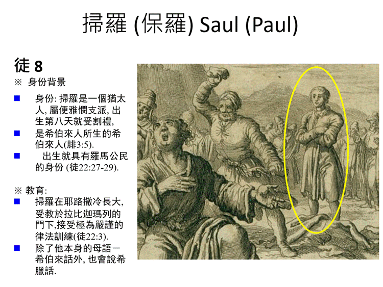
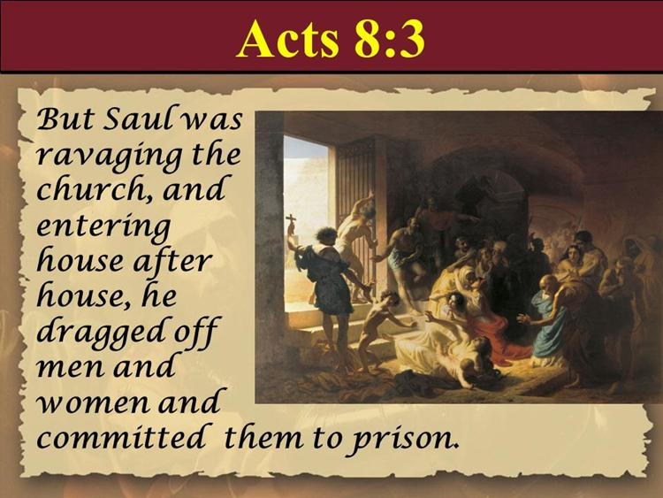
https://heartofashepherd.com/2020/11/17/the-persecutor-and-the-preacher-acts-9-10/
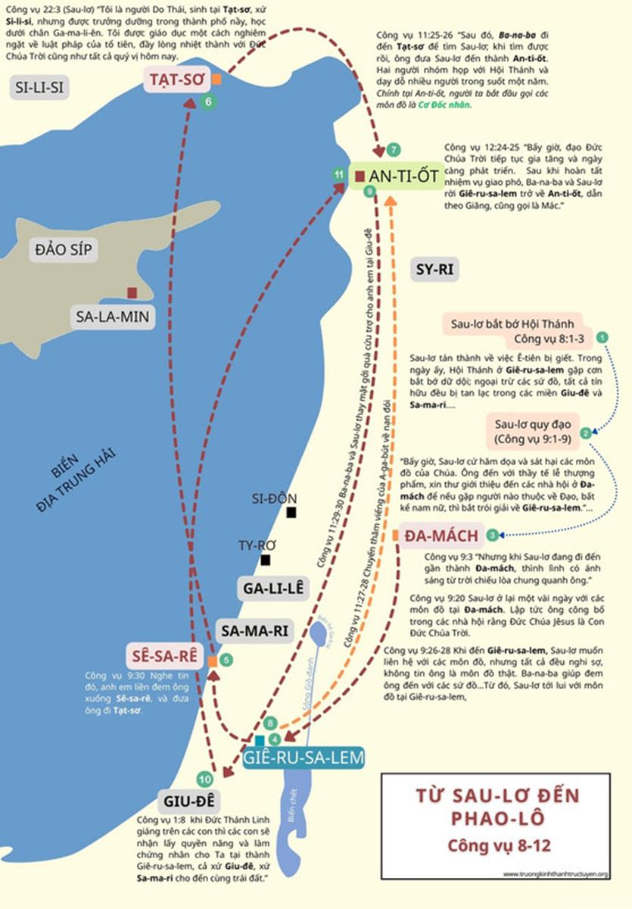
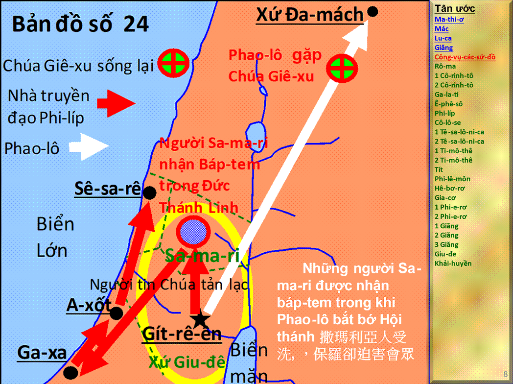
Tông Đồ Công Vụ
{kind=link}
{kind=link}
{kind=link}
{kind=link}
{kind=link}
{kind=link}
{kind=link}
{kind=link}
{kind=link}
{kind=link}
{kind=link}
{kind=link}
{kind=link}
{kind=link}
{kind=link}
{kind=link}
{kind=link}
{kind=link}